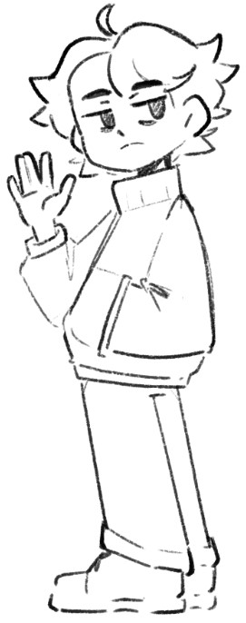

|  | Juancho is a dedicated and talented multimedia student whose imagination knows no bounds. With an unwavering passion for anime and cartoons, he aspires to become a concept artist, breathing life into characters and worlds through his creative vision. From an early age, Juancho found solace and inspiration in the colorful and captivating worlds of animation. Anime and cartoons became his escape, fueling his desire to contribute to the creation of such incredible universes. His devotion to these art forms has shaped his journey as a multimedia student. Juancho's creative journey began with drawing and sketching characters from his favorite shows. As he grew, so did his skills and understanding of the complexities involved in visual storytelling. Determined to hone his abilities, he enrolled in a multimedia program at a renowned institution, eager to expand his knowledge and explore various facets of the creative industry. Throughout his academic pursuits, Juancho has gained valuable expertise in multiple disciplines, including digital art, illustration, 3D modeling, and animation. He possesses a deep understanding of visual composition, color theory, and character design, all of which contribute to his ability to bring captivating ideas to life. |